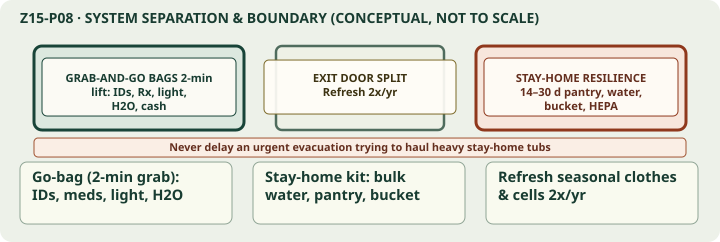

Z15-P08 · Disaster scenarios · New manuscript
Separate grab-and-go evacuation bags from multi-week stay-home kits
Keep evacuation gear light enough to carry in two minutes while maintaining bulkier multi-week supplies cleanly at home.
When it applies · Residential preparedness for both rapid evacuation (fire/flood/hazmat) and prolonged sheltering (blizzard/blackout).
Equipment · Portable backpacks/duffels (go-bags) near exit plus labeled home pantry, water, and utility bins.

Actions
- Stage lightweight grab-and-go bags (one per person/family unit near an exit or car trunk) containing 72-hour essentials you can grab in under two minutes: water bottles, no-cook snacks, headlamp, NOAA/hand radio, phone power bank, rain/warm layers, basic first-aid kit, N95 masks, waterproof document pouch, cash, and 7-day spare medications.[T12, D14, D16]
- Keep bulkier stay-home resilience supplies separately at home (14–30 day rotated food pantry, multi-gallon water jugs, emergency bucket sanitation, blankets/sleeping bags, tools, HEPA clean-room fan/filter, and outdoor cooking backup) so heavy bins never slow down an urgent evacuation.[T12, U08, D18]
- Inspect both kits twice yearly (when clocks change in spring and autumn) to swap expired batteries, rotate seasonal warm/cool clothing, and update children's clothing sizes and prescriptions.[T12]
Failure recognition · Packing all emergency supplies into one 90-pound plastic tub in the attic that cannot be lifted down stairs during a sudden midnight wildfire evacuation.[T12, D14]
Verify · Confirm go-bags are liftable in 2 minutes by their assigned carrier, stay-home bins are labeled separately, and 6-month refresh dates are logged.[T12, D14]
Stop or change course · Never delay an urgent evacuation to pack bulky stay-home items—human life and compact go-bags leave first.[D14, T13]
Evidence and editorial notes
- D14 · FEMA / Ready.gov · Evacuation (current web edition)
- Section: Household Evacuation Logistics, Go-Bags, and Shelter Registration · Conditions: Mandatory or voluntary evacuations across multi-hazard disasters
Support: Pre-pack grab-and-go kits (medications, IDs, water, warm layers, chargers, pet gear), maintain at least two independent route options out of the neighborhood, notify out-of-area contacts upon departure, and register status through official shelter/Red Cross Safe & Well channels.
Limitations: GPS navigation apps can route evacuees onto flooded, smoke-blocked, or closed secondary roads; follow live law-enforcement and DOT closures. · Conflicting evidence: None; operationalizes T13 into household evacuation execution.
Editorial note: Core evacuation execution and accountability evidence in Z15. · Specialist reviewer: Emergency management and transportation safety
Primary source · checked 2026-11-24 - D16 · FEMA / Ready.gov · Financial Preparedness and Vital Records (current web edition)
- Section: Vital Documents, Cash Reserves, Insurance, and Post-Disaster Recovery · Conditions: 30-day resilience planning and post-disaster household recovery
Support: Keep waterproof physical and encrypted offline digital copies of IDs, medical lists, prescriptions, insurance policies, deeds, and emergency contacts alongside small-denomination cash so household transactions and assistance claims survive bank/internet outages.
Limitations: Online-only cloud portals are inaccessible during power and telecom outages. · Conflicting evidence: None; critical pillar of prolonged 30-day household resilience.
Editorial note: Grounds documentation, cash liquidity, and recovery staging cards. · Specialist reviewer: Emergency management and household continuity
Primary source · checked 2026-11-24 - D18 · FEMA / Ready.gov · Drought (current web edition)
- Section: Extended 30-Day Resilience, Supply Pacing, and Mutual Aid · Conditions: Multi-week regional disruption, supply-chain interruption, or prolonged utility recovery
Support: Manage 30-day household resilience through structured inventory tracking, conservative water/fuel/battery rationing, scheduled sanitation and hygiene routines, daily neighborhood wellness checks, and early transition to community distribution hubs before critical reserves run dry.
Limitations: Self-reliance plans must remain integrated with municipal/county relief and medical care—isolation without community check-ins increases mortality during prolonged disasters. · Conflicting evidence: None; frames 30-day scenarios realistically without doom-isolationism.
Editorial note: Anchors Z15 30-day operations, rationing logs, and community mutual-aid cards. · Specialist reviewer: Emergency management and community resilience
Primary source · checked 2026-11-24 - T12 · FEMA / Ready.gov · Build a Kit (current web edition)
- Section: Build a Kit > Basic Disaster Supplies Kit and Maintenance · Conditions: Overnight and multi-day emergency readiness
Support: Assemble water, food, light, NOAA/battery radio, first aid, whistle, local maps, sanitation, medications, and backup power; inspect expiration dates and batteries regularly.
Limitations: Standard 72-hour kits do not cover extended multi-day isolation without replenishment or specialized cold/medical items. · Conflicting evidence: None; links kit readiness to periodic maintenance checks.
Editorial note: Supports equipment readiness, inspection, and overnight-emergency cards. · Specialist reviewer: Emergency management and field readiness
Primary source · checked 2026-11-24 - T13 · FEMA / Ready.gov · Evacuation (current web edition)
- Section: Evacuation > Before, During, and After Evacuation · Conditions: Developing wildfire, flood, storm, or infrastructure emergency
Support: Identify multiple exit routes ahead of time, keep essential go-bags and fuel ready, leave promptly when authorities order evacuation, and do not return until officials declare the area safe.
Limitations: Late departure can trap groups behind road closures, smoke, or rising water. · Conflicting evidence: None; pairs with NWS-FLOOD and READY-WILDFIRE.
Editorial note: Establishes clear leave-early decision thresholds for multi-hazard scenarios. · Specialist reviewer: Emergency management
Primary source · checked 2026-11-24 - U08 · FEMA / Ready.gov · Water Storage and Emergency Supply (current web edition)
- Section: Water > Emergency Household Supply, Shutoff, and Alternate Indoor Sources · Conditions: Household plumbing disruptions, water-main breaks, or winter freeze outages
Support: Store at least 1 gallon per person per day for several days (two weeks where feasible for extended outages), know the main water shutoff valve location, and recognize clean indoor water-heater reserve boundaries only after shutting off power/gas and confirming supply safety.
Limitations: Never use water from radiators, hot-water boilers, or chemically treated toilet tanks for drinking. · Conflicting evidence: None; complements CDC-S (W06, W14).
Editorial note: Covers household water shutoffs, pipe-freeze prevention, and safe indoor reserves. · Specialist reviewer: Plumbing safety and drinking-water public health
Primary source · checked 2026-11-24
Source lineage · FEMA Ready.gov Build a Kit; new manuscript · Classification · New manuscript.